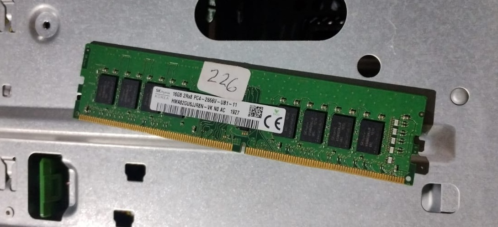
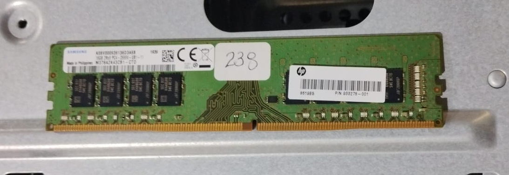
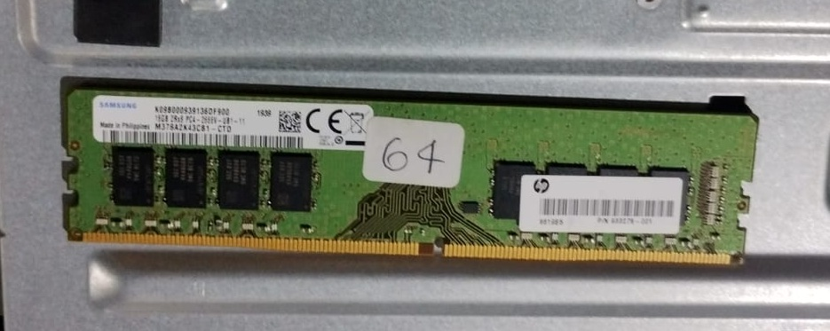
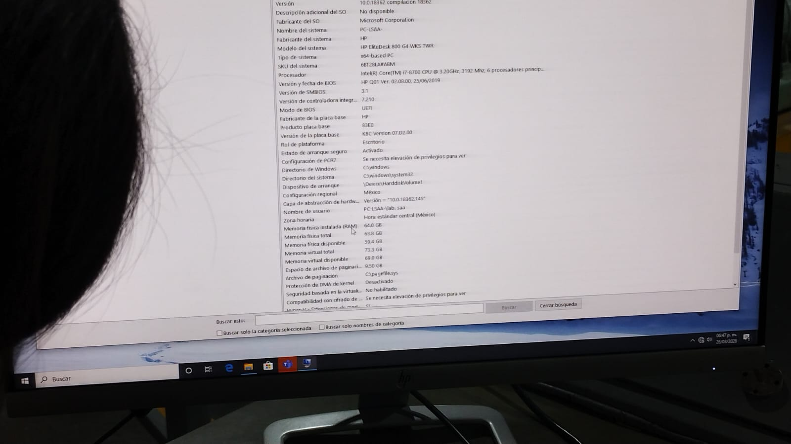
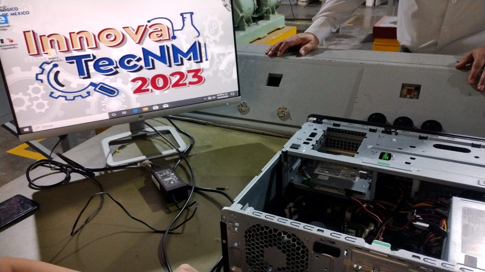

Unidad 3: Selección de componentes para ensamble de equipo de cómputo
Memorias DDR3, DDR4 y DDR5
DDR3: Lanzada en 2007, velocidades de 800–2133 MT/s, voltaje de 1.5 V, capacidad máxima por módulo de 8 GB. Hoy está obsoleta.
DDR4: Lanzada en 2014, velocidades de 2133–3200 MT/s, voltaje de 1.2 V, capacidad por módulo hasta 32 GB. Es la más común actualmente.
DDR5: Lanzada en 2020, velocidades desde 4800 MT/s en adelante, voltaje de 1.1 V, capacidad por módulo hasta 128 GB. Ofrece mayor rendimiento pero requiere hardware compatible.
Cada generación tiene distinta muesca en el conector, por lo que no son compatibles entre sí.
La selección depende de la tarjeta madre y el procesador que se utilice.
Evidencias
Memorias que se retiraron y colocaron.
Equipo funcionando después de la instalación.





Regresar